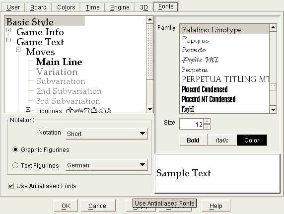

|
|
jose 1.4.1 |
|
Edit text styles and colors for The Game Panel .
This set of controls is also available in The Export & Print Dialog , where you can control print formatting.

Use the control on the left to select a document part. Note that there is a kind of hierarchy: changes to the "Base Style" will also apply to underlying styles.
Use the controls on the right side to select font and color properties.
Choose the game notation format:
Select this option to display graphical piece figurines.
Select this option to display text figurines in the selected language.
For example: N for knight, B for bishop, R for rook, Q for queen, K for king.
Check this option to display antialiased text. Depending on the font that you are using, antialised fonts may increase readability.
Note that this checkbox applies to all styles.
Choose a font from the list.
Enter a font size (points).
Click here to use a bold font.
Click here to use an italic font.
Select the text color ( Color Chooser )
|
|
© 2002-2006 jose-chess.sourceforge.net |
|